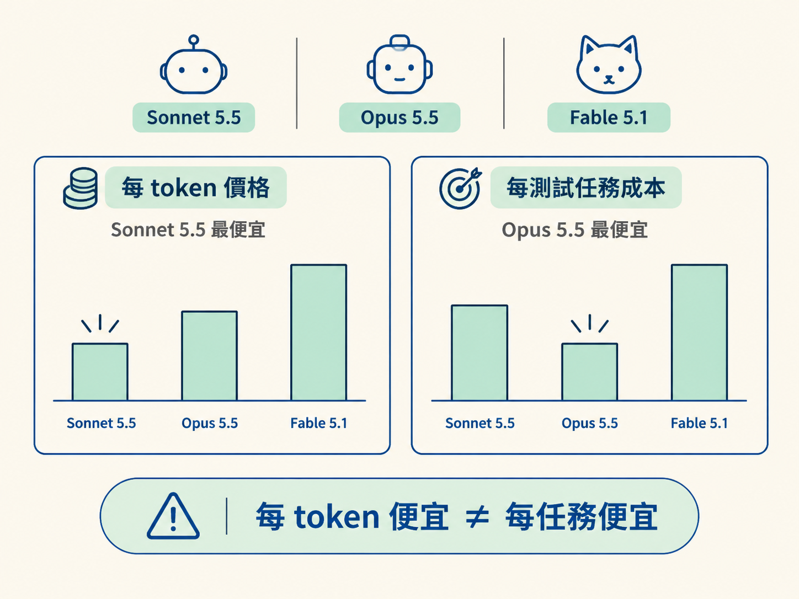
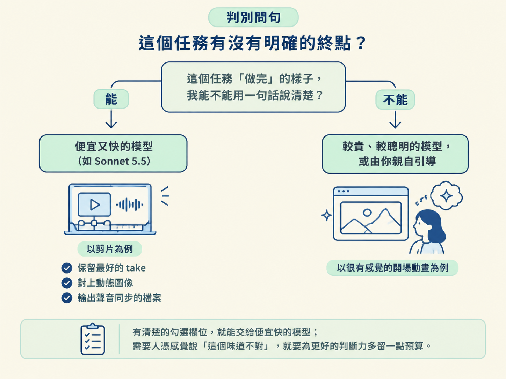

上一節我們把產線上的四個角色點完名，agent 就像那位負責統籌全場的總鋪師。現在還沒開始剪片，你得先決定三件事：使用哪個 agent 平台、開哪一顆模型，以及把 effort 調到多大。
這三個設定會直接影響兩件事：每支影片要花多少錢，以及你要在螢幕前等多久。它們不是影片內容的一部分，卻像開工前選刀具一樣，會影響後面整條流程。
本課的目標，是讓你能根據「任務有沒有明確終點」，在 Sonnet 5.5、Opus 5.5 與 Fable 5.1 之間做選擇，設定合適的 effort，也知道剪片時該挑哪個 agent 平台。
很多人會直覺認為模型越貴越好，於是一律使用最頂規的模型。但如果剪片是一件有清楚完成條件的工作，貴模型未必划算。
反過來，為了省錢而一律使用最便宜的模型，也可能讓模型一直做不完。你得重跑好幾次，最後花掉的時間與費用，反而超過一開始使用較強模型的成本。
選模型時，要同時看三件事：每 token 的價格、產出的速度，以及模型本身的智慧程度。還要多留意一個容易被忽略的差異：每 token 的價格，和完成一個任務的實際成本，不是同一回事。
以下數字來自 Artificial Analysis 的 Intelligence Index（v4.3.2，max effort，2026 年 9 月 30 日）：
| 項目 | Sonnet 5.5 | Opus 5.5 | Fable 5.1 |
|---|---|---|---|
| 輸入價格（每 100 萬 token） | $2 | $4 | $10 |
| 輸出價格（每 100 萬 token） | $10 | $20 | $50 |
| 速度（token／秒） | 139 | 92 | 70 |
| 智慧分數 | 56 | 58 | 53 |
| 每測試任務成本（max effort） | $7.60 | $5.98 | $7.63 |
如果只看每 token 的價格，Sonnet 5.5 是 Opus 5.5 的一半，速度也大約快 1.5 倍，而智慧分數只低兩分。
但換成每個任務來看，結果反而相反：在 max effort 下，Opus 5.5 的每測試任務成本是 $5.98，低於 Sonnet 5.5 的 $7.60。原因是 Sonnet 為了完成任務，使用了更多 token。
這是選模型時最容易踩到的直覺陷阱：每 token 便宜，不代表每任務便宜。

面對一個新任務時，可以先問自己一句話：
這個任務「做完」的樣子，我能不能用一句話說清楚？
如果答案是「能」，便宜又快的模型通常就夠用了。
剪片正好屬於這類工作。它的完成條件可以具體驗收：保留最好的 take、讓動態圖像對上講話內容，最後渲染出可以播放而且聲音同步的檔案。每個步驟都有清楚的檢查方式，因此不一定要使用最昂貴的模型。
如果答案是「不能」，情況就不同了。比如請模型「做一支很有感覺的開場動畫，讓我看了會驚豔」，這是品味型任務，沒有客觀而明確的終點。這時候，使用比較貴、比較聰明的模型，或由你親自多做引導，通常更合適。
可以把這條界線想成驗收單：有清楚的勾選欄位，就能交給便宜快的模型；需要人憑感覺說「這個味道不對」，就要為更好的判斷力多留一點預算。

同一顆模型還有一個 effort 旋鈕。effort 越大，模型越願意多想幾步、多做幾次嘗試，任務比較容易一次完成；代價是會使用更多 token，每個任務的成本也會上升。
上表特別標示 max effort，就是因為同一顆模型在低 effort 下，每任務成本會更低。選 effort 的判準，和選模型其實很像：這個任務有沒有明確終點，以及你是否願意為「一次做完」多付一些 token。
影片工作通常比較長。demo 影片在 max effort 下，單支要跑 63 到 88 分鐘，因此實務上常把 effort 開大，讓它盡量一次完成，自己則可以先去處理其他事情。
但如果只是反覆重跑一個小場景，把 effort 調小、節省 token，往往更合理。簡單說，整支影片想穩定跑完時用大 effort；小場景需要多次試驗時用小 effort。
要在啟動時設定 effort，可以直接指定：
claude --effort max如果想讓它固定生效，也可以寫進 Claude Code 的設定檔：
{
"effortLevel": "max"
}模型本身則使用 /model 選擇。每次開工前，這兩個設定就是產線上的第一個檢查點。
Claude Code 和 Codex 都可以使用，主要差別在於你想搭配哪一顆模型。以 GPT6 Astra 為例的教學使用 Codex，因為 Codex 搭載了 Astra；但同一個教學也說明，你完全可以改用 Claude Code 或 Fable，因為它們同樣是很強的模型。
真正重要的觀念是：skill 由「工具加上提示詞」定義，不是綁在某一家廠商身上。你寫好的 /animate skill，換到另一個 agent 平台一樣可以執行。
因此，選平台時挑自己已經用得順手的就好。把判斷力留給模型與 effort 的搭配，而不是花時間糾結平台名稱。
「有明確終點，就用便宜模型」不是鐵律，至少有兩種情況會翻轉。
第一，任務雖然有清楚的終點，卻非常長、非常複雜。便宜模型可能一次又一次做不完。當重跑次數增加，總成本反而可能超過直接使用較貴的模型。
第二，任務的最後 10–20% 需要品味判斷。例如你知道「這個轉場感覺不對」，卻無法寫成一條客觀規則。這種沒有明確驗收標準的收尾，便宜模型通常很難給出你真正想要的結果。此時，換上聰明一點的模型來執導最後一段，可能更省事。
所以比較準確的做法是：用便宜模型完成可驗收的主體，把貴模型的預算留給需要品味的收尾。
先問任務有沒有明確終點：有，就優先使用便宜又快的 Sonnet 5.5；沒有、需要品味，才值得考慮 Opus 5.5。不要把每 token 成本當成每任務成本。Sonnet 在 max effort 下反而可能比 Opus 貴。effort 開大，是為了讓長任務一次做完；effort 開小，是為了反覆試小場景時節省 token。agent 平台則選自己順手的即可，因為 skill 不綁廠商。
模型選好、effort 設好，接下來就把工具真正裝起來：安裝 HyperFrames CLI，以及讓 agent 一問就懂的 helper skill。下一節會把安裝步驟一步一步走完。